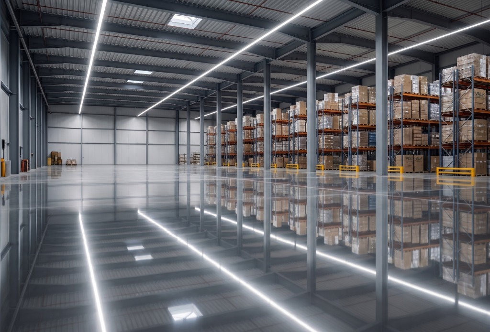

Pisos industriales continuos de alta resistencia, libres de juntas destructivas y diseñados para la máxima continuidad operativa de montacargas, racks y líneas de producción.
El problema no es el concreto, son las juntas.
Descubra en menos de 2 minutos cómo los colados continuos y el postensado activo transforman la logística de su nave industrial, multiplicando la productividad y suprimiendo las reparaciones destructivas.
Áreas de hasta 5,000 m² coladas sin una sola junta intermedia de contracción.
Cables de torón de 7 hilos que mantienen el concreto siempre comprimido.
Superficie ultra plana ideal para racks altos y vehículos guiados automatizados (AGV).
¿Desea evaluar el diseño para su nave o proyecto en el Bajío?
Solicite una visita técnica sin costo →Explicación directa para tomadores de decisiones que buscan rentabilidad y cero problemas operativos, sin jerga innecesaria.
"Los pisos tradicionales se agrietan al fraguar y requieren cortes (juntas) cada pocos metros. El paso continuo de los montacargas destruye los bordes de estos cortes. Nuestro sistema utiliza cables internos de alta resistencia que 'aprietan' el concreto desde su interior de forma continua. Al estar comprimido desde adentro, el firme no se agrieta ni se abre, eliminando la necesidad de cortar el piso y acabando con el 90% de las juntas."
Un piso convencional de 10,000 m² tiene más de 4,000 metros lineales de juntas expuestas a roturas. Un piso postensado reduce esa cifra a cero cortes de contracción.
Al secar, el concreto busca encogerse. Para evitar grietas descontroladas, los albañiles hacen cortes con disco cada 4 o 5 metros.
Se instalan torones de acero de alta tensión dentro del firme. Tras el colado, gatos hidráulicos tensan los cables con toneladas de fuerza.

Diseñado para maximizar el retorno de inversión y erradicar los costos ocultos que merman la rentabilidad de las plantas en el Bajío.
Cero gastos en resellar juntas rotas, inyectar selladores elastoméricos anuales o aplicar parches de resina epóxica que se desprenden a los tres meses.
Elimina los impactos, rebotes y vibraciones constantes. Prolonga hasta un 300% la vida útil de ruedas de poliuretano, rodamientos, mástiles y baterías.
Trabaje a máxima capacidad sin interrupciones, desvíos de tráfico de almacén ni clausura de pasillos por cuadrillas de albañilería o curado de resinas.
Colados continuos de gran escala (hasta 2,500 m² por jornada) que permiten entregar la nave industrial en tiempo récord para inicio de operaciones.
Ajuste los parámetros según el tamaño de su nave y la flotilla de montacargas para proyectar su ahorro a 5 y 10 años:
Compruebe por qué los parques industriales más modernos del Bajío están migrando a soluciones sin juntas.
| Factor Clave de Operación | Piso Convencional (Cortado) | Piso Postensado Sin Juntas |
|---|---|---|
| Mantenimiento y Resellado Frecuencia y costo en resinas | ✗ Reparaciones constantes (6-12 meses) | ✓ Cero mantenimiento de juntas |
| Desgaste en Montacargas Vida útil de ruedas y rodamientos | ✗ Desgaste prematuro por golpeteo | ✓ Tránsito ultra suave y 3x más durabilidad |
| Continuidad Operativa Paros de línea y pasillos cerrados | ✗ Interrupciones continuas por bacheo | ✓ Operación ininterrumpida 24/7/365 |
| Planicidad para Racks Altos (FF/FL) Apto para estanterías pesadas y AGV | ✗ Alabeo de losas en bordes de corte | ✓ Superficie plana continua sin alabeo |
| Garantía Estructural Respaldo legal y de ingeniería | ✗ Limitada o sin cobertura en grietas | ✓ Garantía Integral de 10 Años por Contrato |
No somos simplemente proveedores de concreto; somos su socio de ingeniería de principio a fin. Respaldamos cada metro cuadrado con una póliza de garantía legal que protege el valor inmobiliario de su nave industrial.
Certificación de capacidad portante, planicidad y ausencia de grietas patológicas.
Analizamos el tipo de suelo en su parque industrial del Bajío, el peso de sus estanterías de racks y la frecuencia de montacargas para calcular el espesor y postensado exacto.
Instalación de cables plastificados engrasados y anclajes certificados bajo normativas internacionales ACI y PTI.
Ejecución con maquinaria Laser Screed para garantizar superficies superplanas de alta tolerancia, ideales para pasillos angostos (VNA).
Tensado controlado por etapas, verificación de elongaciones y entrega formal de la carpeta técnica con la garantía estructural directa.
Un ingeniero especialista senior visitará su planta o revisará los planos de su nave en el Bajío para entregarle una propuesta técnica y económica personalizada.
Respuestas claras sobre costos, tiempos y factibilidad técnica.